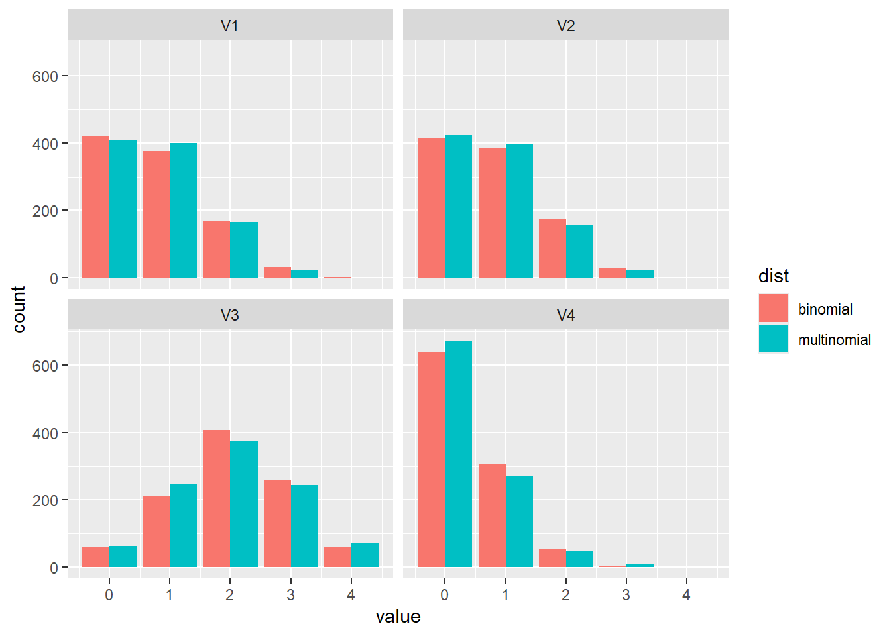
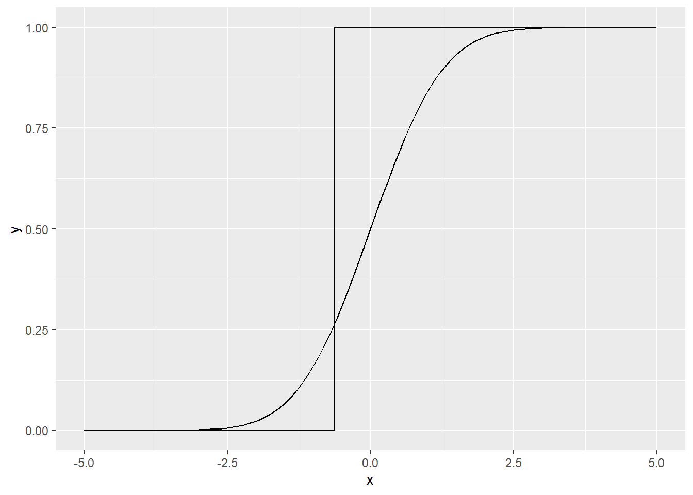
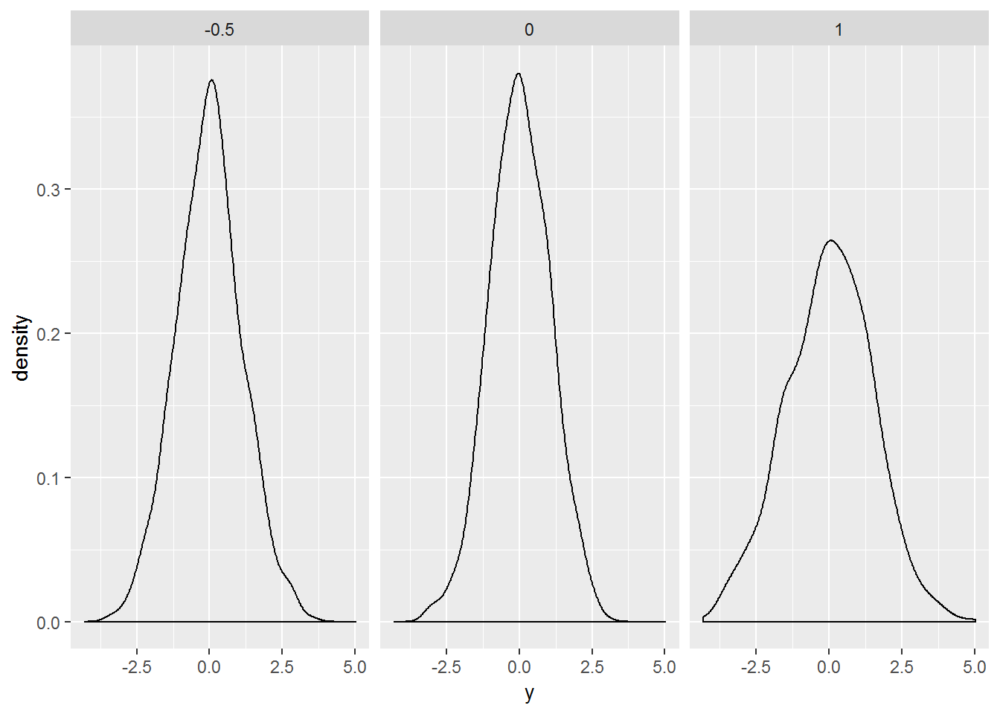

Chapter 13 Estimation basics
This chapter deals with estimation basics.
The students are expected to acquire the following knowledge:
Exercise 13.1 (ECDF intuition)
- Take any univariate continuous distribution that is readily available in R and plot its CDF (\(F\)).
- Draw one sample (\(n = 1\)) from the chosen distribution and draw the ECDF (\(F_n\)) of that one sample. Use the definition of the ECDF, not an existing function in R. Implementation hint: ECDFs are always piecewise constant - they only jump at the sampled values and by \(1/n\).
- Repeat (b) for \(n = 5, 10, 100, 1000...\) Theory says that \(F_n\) should converge to \(F\). Can you observe that?
- For \(n = 100\) repeat the process \(m = 20\) times and plot every \(F_n^{(m)}\). Theory says that \(F_n\) will converge to \(F\) the slowest where \(F\) is close to 0.5 (where the variance is largest). Can you observe that?

Exercise 13.2 Show that the sample average is, as an estimator of the mean:
- unbiased,
- consistent,
- asymptotically normal.
Exercise 13.3 (Consistent but biased estimator)
- Show that sample variance (the plug-in estimator of variance) is a biased estimator of variance.
- Show that sample variance is a consistent estimator of variance.
- Show that the estimator with (\(N-1\)) (Bessel correction) is unbiased.